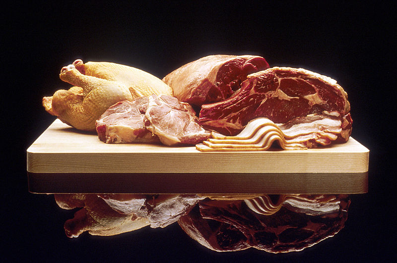
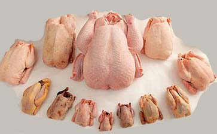
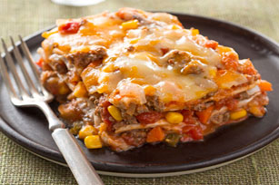

CARNES
CARNES
QUE ES LA CARNE?
La carne es el tejido animal, principalmente muscular, que se consume como alimento.
Se trata de una clasificación coloquial y comercial que sólo se aplica a animales
terrestres normalmente vertebrados: mamíferos, aves y reptiles, pues, a pesar de poder
aplicarse tal definición a los animales marinos, estos entran en la categoría de pescado,
especialmente los peces los crustáceos, moluscos y otros grupos suelen recibir el nombre
de marisco. Más allá de su correcta clasificación biológica, otros animales, como los
mamíferos marinos, se han considerado a veces carne y a veces pescado.

TIPOS DE CARNE
Existen muchas variedades de carnes procedentes de muchas localidades, se puede decir que la mayoría
del consumo mundial de carne procede de la carne de animales domesticados para abastecer de materia
prima la industria cárnica.
TIPOS DE CARNE
CARNES DE VACUNO

Una de las primeras razas domésticas que pudieron abastecer al hombre de sus necesidades cárnicas pudo
haber sido el uro que se extendió a lo largo de Eurasia. En el siglo XVII algunos ganaderos
de Europa empezaron a seleccionar diversas razas bovinas para mejorar ciertas cualidades como su leche,
la capacidad y resistencia ante el trabajo agrícola, la calidad de la carne, etc. De esta forma existen
hoy en día razas como la francesa Charolesa y Limousin, la italiana Chianina (de tamaño inmenso), las inglesas
de Hereford y Shorthorn. En Estados Unidos existen razas autóctonas que proporcionan una carne con sebo
entrevatado y que suelen proceder de animales sacrificados a la edad de
15 a 24 meses, este tipo de carne es entendido como de buena calidad por el consumidor medio estadounidense.
En Japón existen razas como la wagyu de carne entrevetada, algunas de estas carnes se
cortan en finos filetes de 1,5 a 2 mm y se elaboran platos como el sukiyaki y el shabu shabu.

Carnes de ovinos y caprinos
La carne de cordero es muy aceptada en las diversas culturas de la tierra; posiblemente fuera
la oveja uno de los primeros animales en ser domesticados por el hombre (tras el perro y el uro)
y es muy valorada por la producción de lana (casi un 10% de las razas la producen) y leche
(empleada en la elaboración queso).

Carnes de porcino
Los cerdos son descendientes del jabalí salvaje euroasiático.
Si la carne de vaca ha sido la predilección de muchos habitantes de Europa y América,
la carne de cerdo es la que más porcentaje de población ha alimentado en el resto del mundo,
en algunos países como China la palabra "cerdo" es entendida como un significado genérico de "carne".
Posee su ganadería algunas ventajas: es relativamente pequeño, es omnívoro, tiene un ratio de crecimiento
bastante bueno comparado con otros animales y se consume casi todas las partes de su organismo.
Se dedica en exclusiva a la producción de carne

Carnes de aves
Entre la carne de aves (denominada a veces como volatería) se encuentra la de aves de corral como puede ser la de gallina
(su cuidado proporciona también huevos); el pato que se consume en dos etapas: en el huevo germinado tal
y como lo hacen en Filipinas en el balut, o en un adulto de 6 a 16 semanas; pavo que se pueden cuidar
ejemplares en un rango de 6-9 kg para el consumo humano entre 12 y 18 semanas mientras que en EE. UU.
se llega extender el periodo hasta 32 semanas para adquirir ejemplares inmensos; el ganso, codorniz,
perdiz, la paloma, etc. todos ellos animales domesticados que producen además huevos. Gran parte de
las variedades existentes de gallinas están adaptadas y seleccionadas para proporcionar grandes
rendimientos en el crecimiento.
otras carnes
En diferentes culturas el tipo de consumo de carne varía mucho, el concepto habitual es relativo y está relacionado con las costumbres
culinarias del lugar, la disponibilidad del animal, las tradiciones sociológicas, etc. En la cocina occidental no se realizan ciertas
preparaciones por ser "poco habituales" o por ser una práctica ya abandonada, o muy localizada de ciertas áreas:
*Carnes de liebres y conejos: Suelen ser animales que tradicionalmente se han considerado de caza, su alta tasa
de reproducción les convierte en una especie idónea para su ganadería. Se trata de una carne baja en grasas (menos del 4%)
y alta en contenido proteico (más del 20%). Las piezas suelen tener entre los 2,5 kg de peso.
*Carne de caballo: Es consumida frecuentemente en algunos países de Europa, como Alemania y el oeste de Francia
y en algunos lugares de Asia, a pesar de que haya sido rechazada en algunas partes (tanto la carne como su leche).
La carne de sus equivalentes son el burro y la mula. Los antiguos griegos la ofrecían como sacrificio a Poseidón.
El consumo de carne de caballo se denomina hipofagia.
*Carne de perro: Existe en la cocina coreana y en la cocina china. En algunos lugares de Asia se consume de forma
tradicional desde muy antiguo con fines medicinales, donde se cree que previene la impotencia además de proporcionar "calor"
a los cinco órganos vitales.Se llegó a consumir en diferentes partes como en el México prehispánico, ya que los aztecas
consumían el "itzcuintli" o perro pelón mexicano.
*Carne de gato: No es extraño verlo en mercados chinos para ser cocinado. Aunque en España es rechazado para su consumo
por ser animal de compañía, se ha llegado a consumir en épocas de escasez, al igual que la carne de perro (es el origen de la
expresión dar gato por liebre).
*Carne de avestruz: Aunque originario de la cocina australiana, es cada vez más popular en Europa, y hoy día las granjas de
vestruces o los ganaderos que complementan su granja con estos animales son cada vez más frecuentes, siendo habitual encontrarlas
en las ferias de ganado.
*Carne procedente de anfibios y reptiles: Es una carne blanca muy apreciada en gran parte de Asia. En Europa tiene tradición
el consumo de la carne de rana, sin embargo cayó en desuso. Desde hace varias décadas ha vuelto a consumirse tímidamente.
*Carne de insectos: La entomofagia no es considerada en la mayoría de los países occidentales, pero poco a poco va ganando
consumidores adeptos pudiendo llegar a ser fuente importante de proteínas en la dieta occidental.
*Carne de camello: Es muy empleada en ciertos lugares de África (Oriental y septentrional) así como en algunos países de Medio Oriente,
donde es apreciada también su leche. El sacrificio de un dromedario adulto puede proporcionar entre 500 y 600 kg de carne neta con un
contenido bajo de grasas que puede llegar a un 5%. Esta carne es evitada por los cristianos coptos de Egipto. Dentro de la misma
especie se encuentra la Llama en una preparación en forma de carne seca denominada charqui (una especie de cecina que se hace también
con la carne de otros animales) y se puede elaborar entre 10 y 15 kg por cada llama.
*Carne de ballena: El consumo de la carne de estos grandes mamíferos (llegan a pesar 150 toneladas) está muy regulado y prohibido
en algunos países, a pesar de ello se consume en algunos lugares donde su carne forma parte de las recetas más tradicionales.
Su carne es muy similar a la carne del vacuno, pero con un mayor contenido graso, el color de la carne depende la edad del espécimen y
puede variar entre rojo a rojo oscuro. Esta carne tiene periodos de conservación muy cortos y tiende a ponerse rancia muy rápido.
*Carne de cuy: El consumo de ésta especie, también conocida como cuyo, cuye , cobaya o conejillo de indias, es común en países
andinos de América del Sur como Perú, Bolivia o Ecuador. Su carne posee un alto valor nutritivo: poca grasa y mucha proteína.
*Canibalismo: Consumo de carne humana. Fue una práctica realizada en las culturas antiguas, siendo con el tiempo rechazada,
abandonada y finalmente, restringida por el ámbito penal, perseguida por las sociedades modernas. Surge con mayor frecuencia en periodos de hambruna como una forma de desesperación.<
Recetas de comida con carne
Pastel de carne con manzana y kétchup con sidra

preparación: 10 min
tiempo total: 1 hr 12 min
rinde: 6 porciones
Necesitas
*1 paquete (6 oz) de mezcla clásica de cuatro quesos y pan molido sazonado
FRESH TAKE Classic Four Cheese Recipe Cheese Breadcrumb Mix, ya mezclada, cantidad dividida
*1/4 taza de leche
*3/4 libra de carne molida de res magra
*3/4 libra de carne molida de cerdo
*1 manzana grande, rallada gruesa (aprox. 1 taza)
*2 cucharadas de perejil fresco picado
*1 cucharada de tomillo fresco picado
*1/3 taza de sidra de manzana
1/3 taza de salsa kétchup
como hacerlo
CALIENTA el horno a 350ºF.
RESERVA 2 cdas. de la mezcla de queso.
MEZCLA la leche con la mezcla de queso restante en un tazón grande. Añade los próximos 5 ingredientes y
mezcla todo bien. Forma un pastel en una fuente para hornear de 13x9 pulgs., rociada con aceite en aerosol.
HORNEA el pastel 1 hora. Ponle encima la mezcla de queso que reservaste;hornéalo 2 min. Combina la sidra con
el kétchup; sírvelos con el pastel de carne.
Chiles rellenos con carne de res y plátano

preparación: 20 min
tiempo total: 35 min
rinde: 8 porciones
Necesitas
*4 rebanadas de tocino (tocineta) OSCAR MAYER Bacon, picadas
*2 plátanos maduros (amarillos), pequeños, cortados en cubos de 1/2 pulgada
*1-1/2 libra de carne molida de res magra
*1 lata (8 oz) de salsa de tomate (jitomate), cantidad dividida
*1-1/2 taza de queso cheddar fuerte desmenuzado KRAFT Shredded Sharp Cheddar Cheese, cantidad dividida
*8 chiles poblanos grandes, asados, pelados, sin semillas ni venas
*1/2 taza de crema agria BREAKSTONE'S Sour Cream o la de KNUDSEN
como hacerlo
CALIENTA el horno a 350ºF.
COCINA revolviendo el tocino en una sartén grande a fuego medio, hasta que esté crujiente. Sácalo de la sartén
con una cuchara ranurada sin deshacerte de la grasa en la sartén; reserva el tocino. Cocina los plátanos en la
sartén revolviéndolos durante 5 min. o hasta que se doren. Transfiérelos a un tazón.
DORA la carne molida en la sartén. Incorpórale 1/4 taza de la salsa de tomate. Cuando hierva, retira la sartén
del fuego. Agrega el tocino, los plátanos y 3/4 taza del queso; rellena con esta mezcla los chiles. Ponlo en un molde
de 13x9 pulgs. Ponle encima la salsa de tomate y el queso restantes.
HORNEA los chiles 15 min. o hasta que estén bien calientes y se haya derretido el queso. Sírvelos con copos de crema agria.
Burrito en capas horneado

preparación: 35 min
tiempo total: 1 hr 15 min
rinde: 8 porciones
Necesitas
1 libra de carne molida de res extramagra
1 pimiento (pimentón) rojo, 1 zanahoria grande y 1 cebolla grande, picados
2 dientes de ajo, bien picados
2 latas (14.5 oz cada una) de tomates en cubitos sin sal agregada, sin escurrir
2 tazas de salsa mexicana
1 cucharadita de comino en polvo
1 taza de maíz (elote) congelado
6 tortillas de harina (8 pulgs.), cortadas por la mitad
lata (16 oz) de frijoles refritos
1 paquete (8 oz) de queso estilo mexicano a los cuatro quesos desmenuzado con un toque de queso crema
KRAFT Mexican Style Shredded Four Cheese with a TOUCH OF PHILADELPHIA
como hacerlo
CALIENTA el horno a 400ºF.
DORA la carne con el pimiento, la zanahoria, la cebolla y el ajo en una sartén grande antiadherente.
Añade los tomates, la salsa y el comino; mezcla todo bien. Tapa la sartén; cocina, manteniendo un hervor suave
durante 5 min. Retira la sartén del fuego. Incorpora los granos de elote a la mezcla.
ESPARCE 2 tazas de la mezcla de tomate sobre el fondo de una fuente para hornear de 13x9 pulgs.;
pon encima 4 mitades de tortillas con los lados cortados hacia el costado de la fuente. Cubre esto
con capas de la mitad de los frijoles, 2-1/2 tazas de la mezcla de tomate restante y 1/2 taza del queso.
Repite las capas. Pon encima las tortillas, la mezcla de tomate y el queso restantes; tapa la fuente con
una hoja de papel aluminio, rociada con aceite en aerosol.
HORNEA de 35 a 40 min. o hasta que esté completamente caliente; recuerda quitar el papel aluminio durante
los últimos 5 min. Deja reposar el horneado 5 min. antes de cortarlo para servir.